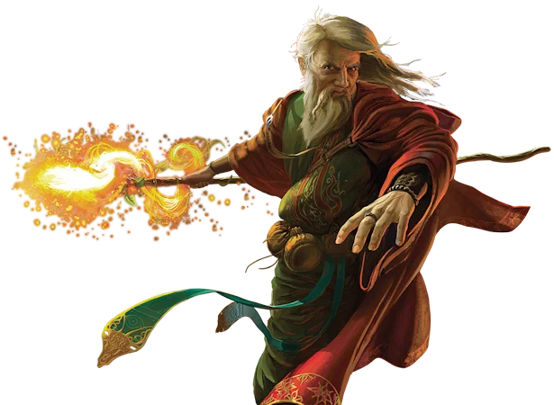

Magie et Fantasy
Lorsque l’on se met à écrire et à créer un univers de Fantasy, il est normal de s’interroger sur la place de la magie au sein du genre. Est-elle indispensable à la Fantasy ? Quel rôle doit-elle y jouer ? Laisser ces interrogations sans réponse peut parfois bloquer les auteurs et les autrices dans leur création. Il est donc primordial d’y répondre.
La magie est-elle indispensable à la Fantasy ?
Commençons par nous pencher sur les différentes définitions de la Fantasy qui ont pues être données depuis l’émergence du genre, dans les années 30 avec les premières aventures de Conan, le héros de Robert E. Howard.
D’abord, dans l’un des premiers essais dédiés à l’étude de la Fantasy et publié en 1979, Marshall B. Tymm, Robert H. Boyer et Kenneth J. Zahorski définissent la Fantasy comme étant un genre littéraire composé d’œuvres dans lesquelles des phénomènes surnaturels, irrationnels jouent un rôle significatif. Dans ces œuvres, des événements arrivent, des lieux ou des créatures existent qui ne peuvent arriver ou exister selon nos standards rationnels ou nos connaissances scientifiques. Grâce à cette première définition on peut déjà voir apparaître que des éléments surnaturels et irrationnels ont une place prépondérante dans le genre.
Ensuite, dans son Panorama illustré de la Fantasy et du Merveilleux, André-François Ruaud estime que relève de la Fantasy une littérature dotée d’une dimension mythique et qui incorpore dans son récit un élément de surnaturel (d’irrationnel) au traitement non purement horrifique, notamment incarné par l’irruption ou l’utilisation de la magie. À nouveau, nous retrouvons les éléments surnaturels et irrationnels comme étant inévitables. André-François Ruaud évoque même l’irruption ou l’utilisation de la magie.
Enfin, dans le MOOC à propos de la Fantasy, Anne Besson définit le genre comme étant une littérature du merveilleux contemporain, où la magie est présente, même si elle peut être discrète. Ici, il n’est pas question de surnaturel, d’irrationnel, de mythes ou de légendes, mais bien de magie au sens le plus large du terme. Comme Anne Besson l’explique dans ce même MOOC, la magie échappe à nos lois physiques ce qui fait d’elle un élément surnaturel et irrationnel. Ce qui rejoint parfaitement les précédentes définitions.
Nous pourrions également citer les définitions de Wikipédia : La fantasy, ou fantasie, est un genre littéraire présentant un ou plusieurs éléments surnaturels qui relèvent souvent du mythe et qui sont souvent incarnés par l’irruption ou l’utilisation de la magie. Ou encore celle donnée sur Monde Fantasy : La fantasy est un genre défini par la création d'un monde alternatif inclus, parallèle ou totalement dissocié du nôtre répondant à ses propres lois semblables ou non aux nôtres dans lequel se mêlent les mythes, les légendes, les croyances et la magie qui sont acceptés sans conditions par le lecteur.
Donc, en nous penchant sur ces différentes définitions de la Fantasy, on constate rapidement que, non seulement, la magie est une caractéristique du genre, ce qui la rend indispensable à la Fantasy. En d’autres termes, enlever la magie de la Fantasy revient à retirer l’amour de la Romance.
L’indissociabilité de la magie et de la Fantasy tient beaucoup au fait que le genre est un descendant direct des mythes, des légendes et du merveilleux, genres où la magie, le surnaturel, l’irrationnel et le divin tiennent une place essentielle dans les histoires. Il n’est pas nécessaire de rappeler l’importance des objets divins, tels que la Kunée, l’Anneau des Nibelungen, Excalibur, les baguettes magiques des fées, etc., pour les différents personnages des récits mythologiques ou merveilleux. N’oublions pas non plus les créatures magiques telles que les elfes, les lutins, les fées, les nymphes, les dryades, etc. qui peuplent également ces récits.
Ainsi, comme le précise Anne Besson dans dans sa définition, la magie doit être présente dans les récits de fantasy, et ce, même si elle est discrète. Ce qui signifie que la magie ne doit pas obligatoirement se manifester par des boules de feu et des dragons rasant tout sur leur passage, mais qu’elle peut se contenter d’une manifestation modeste telle que la simple présence de créatures surnaturelles comme des fées, des vampires, des elfes, etc. En revanche, l’existence de ces êtres doit être avérée et doit jouer un rôle dans le récit (cf. point suivant Quel rôle joue la magie dans la Fantasy ?). La présence de ces créatures ne doit également pas être expliquée scientifiquement, auquel cas, on tomberait dans la Science-Fiction.

En outre, la présence avérée de la magie permet de différencier la Fantasy des autres genres de l’Imaginaire (ou SFFF) que sont la Science-Fiction et le Fantastique.
Pour différencier la Fantasy de la Science-Fiction, Orson Scott Card explique, dans son essai How to Write Science Fiction & Fantasy, que si la magie fonctionne dans votre histoire, si les superstitions sont vraies, s’il y a des créatures impossibles comme des dragons cracheurs de feu ou des chevaux ailés, si des génies sortent des bouteilles ou que les malédictions marmonnées causent des malheurs, alors vous écrivez de la Fantasy.
Quant à la différence entre Fantastique et Fantasy, rappelons que le premier est caractérisé par l’intrusion brutale du mystère dans le cadre de la vie réelle, une rupture brutale de l’ordre établi et par une hésitation éprouvée par un être qui ne connaît que les lois naturelles, face à un événement en apparence surnaturel.
Au vu des ces définitions, il est clair que la Fantasy ne peut s’inscrire dans le registre du Fantastique puisque, d’une part, le « cadre de la vie réelle » ne fait pas l’unanimité des contextes des récits fantasy et, d’autre part, les notions d’« ordre établi » et de « lois naturelles » ne peuvent prévaloir. En effet, la Fantasy s’avère être un genre où le lecteur accepte pleinement, sans hésitation, l’existence des éléments surnaturels, où le surnaturel est naturalisé et donc où il fait partie intégrante des lois naturelles du monde fictionnel dans lequel il se produit.
La présence avérée de la magie permet également de distinguer la Fantasy de tous les autres genres avec lesquels elle peut être mélangée comme le roman historique, le roman policier, la romance, etc. Ces combinaisons donnent des récits devenant des sous-genres de la Fantasy comme la Fantasy historique, où une intrigue mêlée de magie prend place lors d’un événement historique réel, la Fantasy policière, où on mène une enquête dans un univers loin de nos lois naturelles, la romantic Fantasy, où l’amour prend une place prépondérante au sein d’une intrigue souvent épique ou héroïque...
Et c'est la fin de cette première partie sur la magie dans la fantasy ! Rendez-vous dans 2 semaines (soit le 22 juin 2018) pour suite !
Commentaire :
Loukass :
C'est impressionnant de voir la quantité de choses que tu as présentées alors que tu n'as fait qu'effleurer la présentation des bases :/
Je ne dirais donc qu'une seule chose : VITE, LA SUITE !!
Ewylia :
Bonjour, je viens de découvrir ton site en cherchant quelque idée pour m'aider à la création de mon manga...et mon dieu, il est splandide ! Les articles sont tous très interessant et très bien écrit O^O
Je n'ai qu'une chose à dire : félicitation pour cet ennorme travail et merci !
J'attend la suite avec impatience étant en train, justement de travailler sur les bases magique de mon monde ^^ , bonne chance pour la suite \(^_^)/